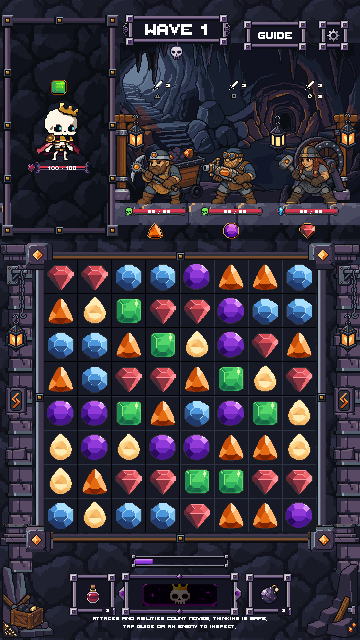
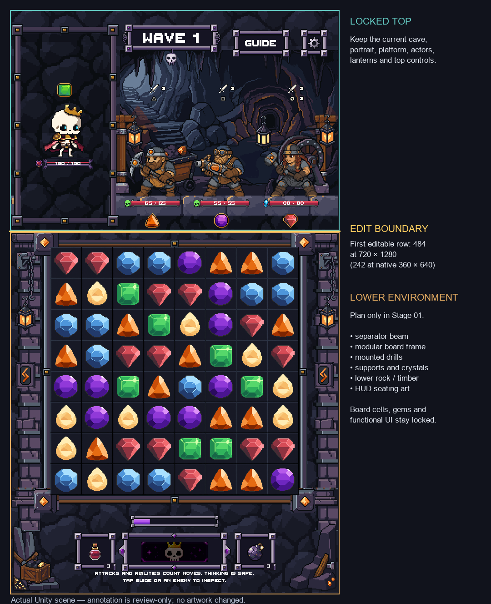
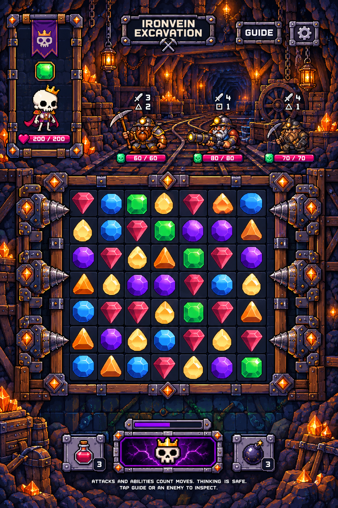

Planning only. Current artwork unchanged. Source and duplicate match every pixel at three sizes. Zero generations. Stop for your approval before Stage 02.
Branch: codex/ironvein-below-tophud-pixellab. Top stays locked through row 483 at 720 × 1280. Lower environment begins at row 484 (native row 242). Board cells, gems and functional HUD artwork stay locked inside that area.
Asset checklist and scope · Unity boundary and pixel comparison


The mockup's top, characters, gems, grid dimensions and controls do not replace the current game. Only its lower mining structure informs later stages.
